- My role
- Product Designer
- Team
- Solo
- Tools
- Figma, Figma Make
- Audience
- Rental operators, 5–30 units
Flex Academy Website design · Assignment
A landing page for short-term rental operators who've outgrown doing everything themselves
Flex Academy teaches the playbook and systems behind running a short-term rental business, from the team behind The Flex.
I designed its landing page as an assignment (it hasn't launched), for one reader: an operator with 5 to 30 units who still handles everything themselves.
Research Who's this for, and what are they already trying?
In FigJam: the brief, Flex's business model, competitors, the operator's wants and pains, a moodboard and a first structure.
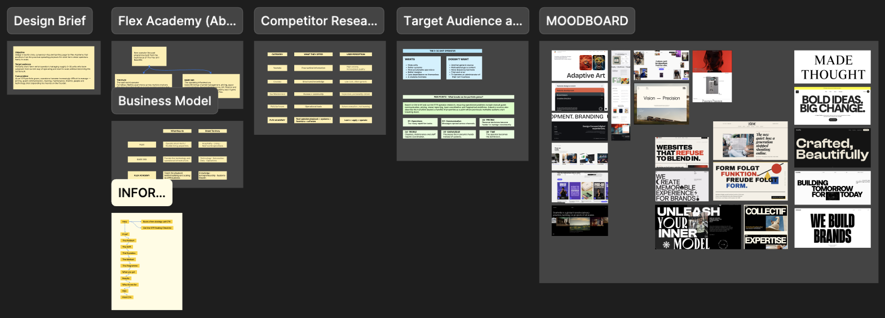
Everyone covers one piece of the job
Videos, courses, masterminds and software each cover a part. None takes an operator from learning it to running it that way.
This reader doesn't want another course. They want to stop being the bottleneck.
Audience Three possible readers, and why I picked one
- Side-hustlers1–3 units
- Operators5–30 units
- Property professionalsAgents, developers, landlords
- LaunchThe 9-to-5 Leaver
- ScaleThe Early Operator
- The Early Operator5–30 units, ready to grow
Two people, two different questions
A beginner asks whether it works at all; an operator with twelve units is buried in running it. This page is for the operator.
Structure The page follows the questions in their head
- The promiseIs this for me?
- The challengeIs this my problem?
- The programmeHow does it fix it?
- The next stepWhat do I do now?
One line to set it up
“Your next 10 units shouldn’t feel like your first.” It speaks to someone who's done this before.
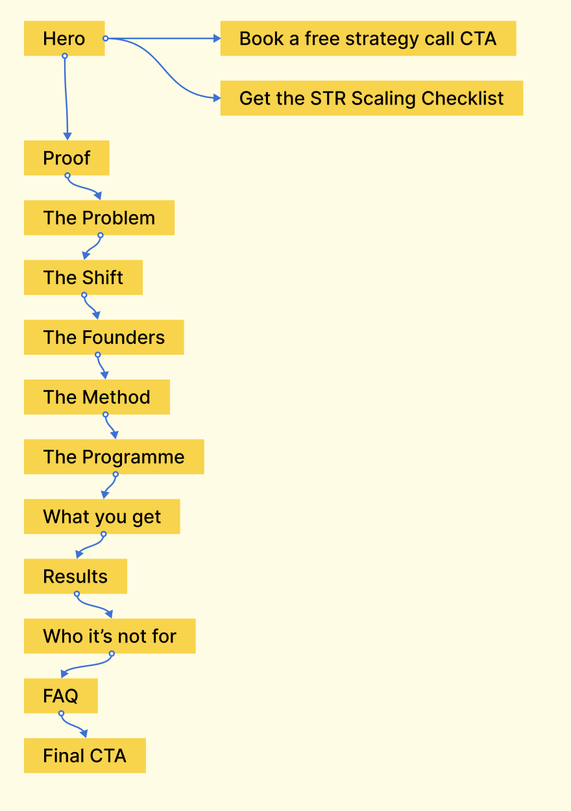
The homepage Top to bottom, in four steps
Is this for me?
The headline, then the numbers and the founders' three disciplines.
Is this my problem?
Twelve units, and everything still goes through one person. Set in black to stand apart.
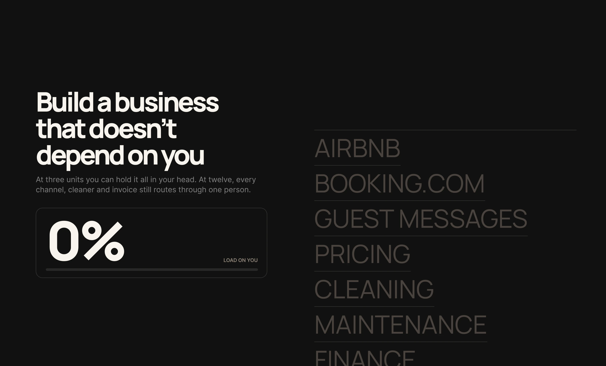
How does it fix it?
Four stages, twelve weeks, the founders, and what's included.
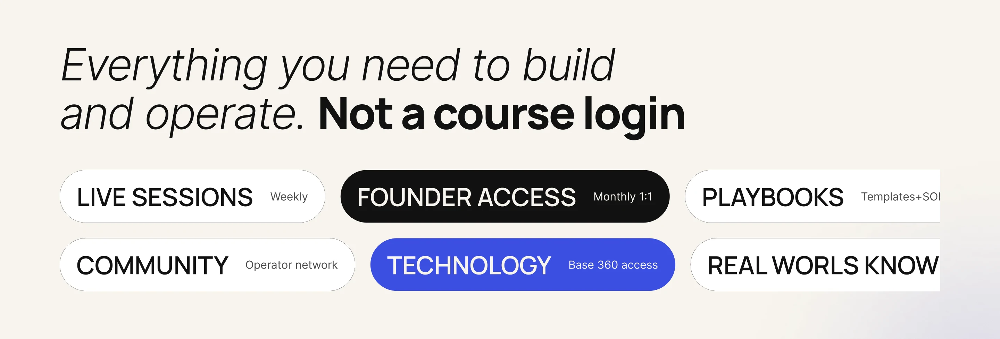
What do I do now?
Proof, an honest who-it's-not-for, the FAQ, then one action.
The three actions Three ways in, for three levels of readiness
A free webinar, for the curious
A form, a confirmation, and it's in your calendar.
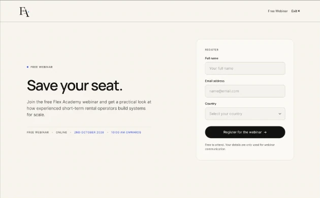
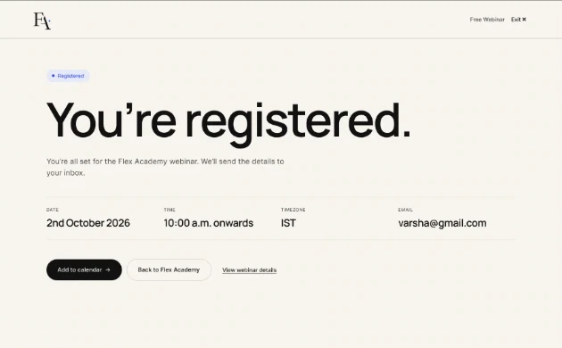
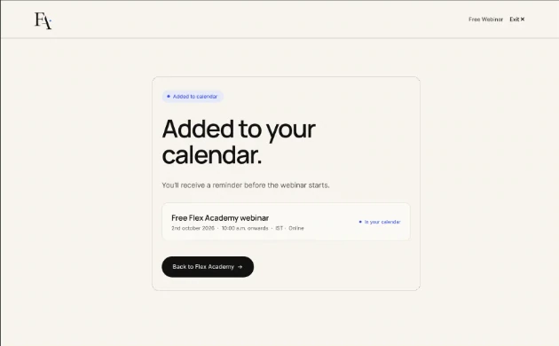
A strategy call, for the ready
The longest on purpose: portfolio, goal and budget first, so the call starts with context.
A checklist, for everyone else
One email field, with a nudge to book a call later.
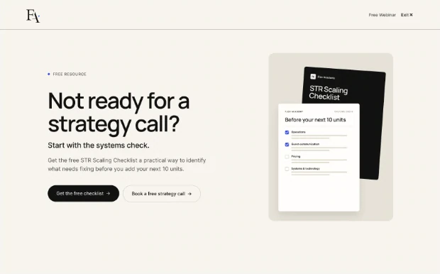
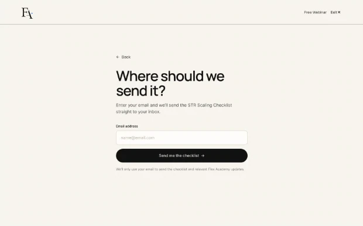
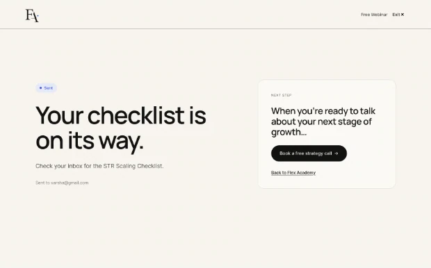
On a phone The same page on a small screen
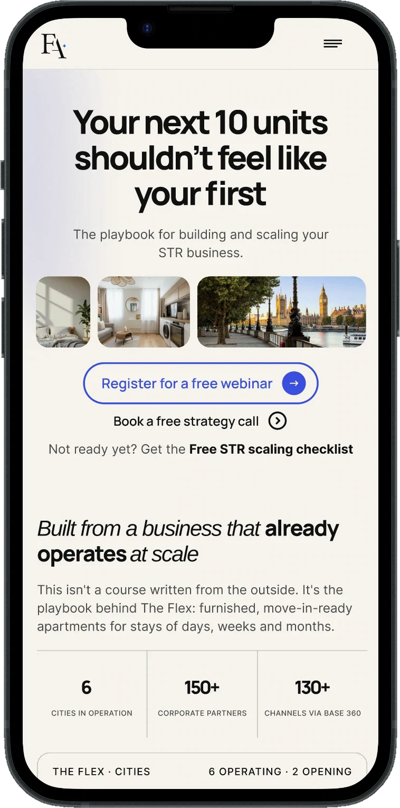
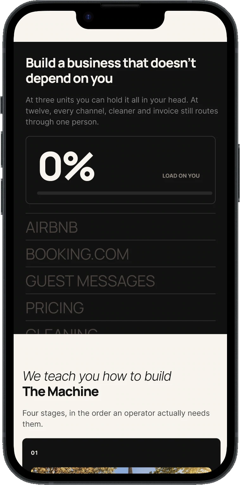
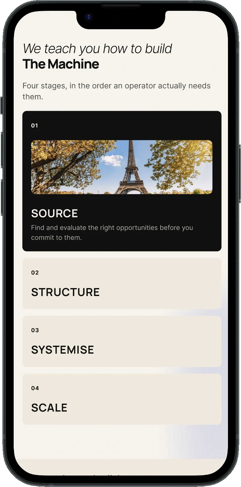
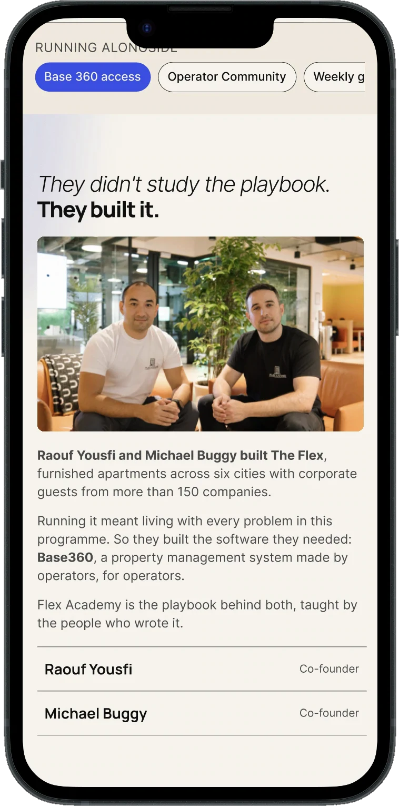
Motion Small things that make it feel alive
A changing picture in the headline, a ticker of cities and cards that open on hover: alive, without getting in the way.
Learnings What I'd take into the next one
A different reader, a different page
It changed what comes first, what gets proof and which actions are offered.
Say who it's not for
An honest filter builds more trust than another promise.
Proof beats promises
Real figures from a working business did more than any headline.